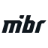

venomzera CS2 Crosshair

MIBRLast update:
CSwOYu7q4ZySYDKFPubj6CSBUfwVdWh4QoDiA83OLiZ7FJ
cl_crosshair_drawoutline "0"; cl_crosshair_dynamic_maxdist_splitratio "1"; cl_crosshair_dynamic_splitalpha_innermod "0"; cl_crosshair_dynamic_splitalpha_outermod "1"; cl_crosshair_dynamic_splitdist "3"; cl_crosshair_dynamic_spread_limit "242"; cl_crosshair_gap "1"; cl_crosshair_length "2"; cl_crosshair_recoil "0"; cl_crosshair_screen_height "1024"; cl_crosshair_t "0"; cl_crosshair_thickness "2"; cl_crosshaircolor_a "255"; cl_crosshaircolor_b "179"; cl_crosshaircolor_g "255"; cl_crosshaircolor_r "15"; cl_crosshairdot "0"; cl_crosshairoutline_a "255"; cl_crosshairoutline_b "0"; cl_crosshairoutline_g "0"; cl_crosshairoutline_r "0"; cl_crosshairstyle "4"; cl_ironsight_dot_scale "1"; cl_ironsight_usecrosshaircolor "0"
About venomzera's crosshair
venomzera plays for MIBR. This is the exact CS2 crosshair venomzera used in an official match on 16/10/2026, read directly from the match demo.
- Color
- #0FFFB3
- Length
- 2
- Thickness
- 2
- Gap
- 1
- Center dot
- No
- Outline
- No
- T-style
- No
- Opacity
- 100%
venomzera uses a very short teal static crosshair: 2 px long, 2 px thick, a gap of 1, no outline and no center dot, set for a 1024p screen height. 27% of the 70 pros on ClutchCrosshair use a longer crosshair, and 9% play with a teal one.
Crosshairs similar to venomzera's
These pros also play with a teal crosshair of almost the same size and gap.
How to use venomzera's crosshair in CS2
- Click Copy next to the share code.
- In CS2, open Settings › Game › Crosshair.
- Click Share or Import and paste the code.
Or copy the console commands, open the CS2 console (~) and paste them. What does each crosshair command do? › More questions in the FAQ ›
Edit venomzera's crosshair in the CS2 crosshair generator ›
venomzera crosshair FAQ
What is venomzera's CS2 crosshair code?
venomzera's CS2 crosshair code is CSwOYu7q4ZySYDKFPubj6CSBUfwVdWh4QoDiA83OLiZ7FJ. It was read from an official match demo on 16/10/2026.
What crosshair settings does venomzera use?
venomzera uses a very short teal static crosshair: 2 px long, 2 px thick, a gap of 1, no outline and no center dot, set for a 1024p screen height.